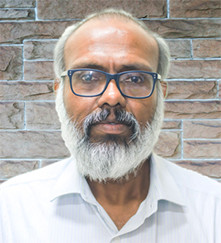
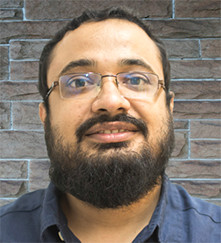
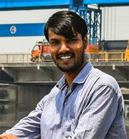
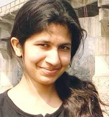
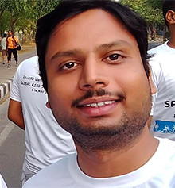
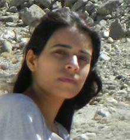
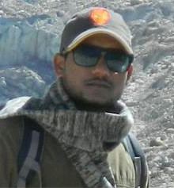

The Zia's Lab studies Water and Wastewater Treatment-Physio-Chemical-
Biological, Anaerobic Wastewater Treatment; Bioremediation of
Emerging Pollutants; Antiibiotic Resistance in the Environment Bioreactor
Design
WHO ARE WE

Professor Sreekrishnan holds PHD,Mtech degrees from IIT Delhi (Biochemical Engineering) and Btech degree from GEC Thrissur,Kerala(Chemical Engineering).After starting his professional career,he worked for two years as Senior Scientific Officer II thenhe joined INRS Eau Institute National de la Researche Scientifique,Canada in 1992,after which he joined IIT Delhi as Assistant Professor in 1995.During his 25 years of experience in wastewater treatment and water management,he had published four well known books on Biotechnology and has a patent to on "An improved process fluidized floc bioreactor and apparatus thread".He is associated with TERI,Kerala University,etc .His name featured in editorial of several widely acclaimed journals

Professor Zia Shaik is Assisstant Professor in Biochemical Department,IIT Delhi.He holds PHD in Biochemical Engineering from IIT Delhi,Btech from NIT Durgapur.he worked at School of Civil Engineering and Geosciences,Newcastle University as Research Engineering where he developed a technology for treatment of Personal Care Product wastewaters which has been adopted by L'Oreal.His reseach team is working on development of energy efficient centralized/decentralized treatment systems for contaminants in environment,protecting water bodies with the collaboration of international partners from USA,UK,etc.As a member of Nationall Greeb Tribunal taskforce , he is responsible for helping government to reduce water contamination in major waterbodies.He has published 20 papers and 3 book chapters and managed contracts worth INR53 Cr from various agencies.
Research Scholars

Deepak Kumar Prasad
Phd scholar
bez 158001@dbeb.iitd.ac.in

Sonia Gupta
Phd Scholar
bez 148391@dbeb.iitd.ac.in

Ashish K Lohar
Phd Scholar
bez 147503@dbeb.iitd.ac.in

Manisha Lamba
Phd scholar
bez 137506@dbeb.iitd.ac.in

Rishabh Shukhla
Phd Scholar
bez 137506@dbeb.iitd.ac.in
MORE PEOPLE